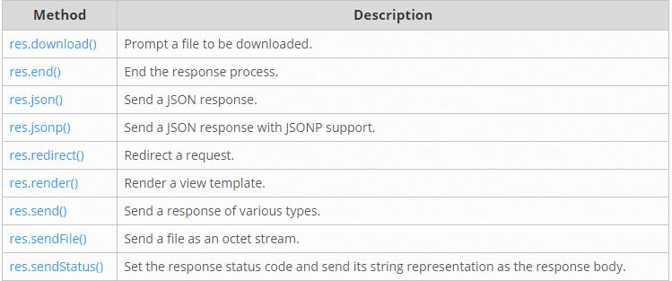

Rutas en ExpressJS
Basic Routing
El direccionamiento básico hace referencia a cómo responde una aplicación a una solicitud de cliente en un punto final en concreto, que viene a ser un URI (o una zona de acceso) y un método de soliticitud HTTP (GET,POST,PUT,etc).
Hay muchas rutas y cada una puede tener una o varias funciones a tratar.
Una ruta sería algo así como:
app.METHOD(PATH,HANDLER)
Donde distinguimos:
- app es una instancia de express
- METHOD es un método de solicitud HTTP
- PATH sería por donde accede al servidor
- HANDLER es la función que se ejecuta
Se ilustran varios ejemplos con rutas simples:
Aquí responde con un "Hola mundo!" en la página inicial.
app.get('/', function (req, res) {
res.send('Hello World!')
})
El siguiente ejemplo responderá a una solicitud POST en la ruta específicada.
app.put('/user', function (req, res) {
res.send('Got a PUT request at /user')
})
Se ilustran varios ejemplos más que puedes visualizar aquí
Routing Guide
El concepto Routing se refiere a la definición de los puntos finales (URIs) y como responden a las llamadas por los clientes.
Se muestra un ejemplo de una ruta basica:
var express = require('express')
var app = express()
// respond with "hello world" when a GET request is made to the homepage
app.get('/', function (req, res) {
res.send('hello world')
})
Que básicamente lo que haría es responder con "Hola Mundo!" cuando una petición de tipo GET se haga a la página principal.
Route Methods (Métodos de Ruta)
Un método de una ruta proviene de un método HTTP y se adjunta a una función de la clase express.
Podemos ver varios ejemplos usando los métodos GET y POST
// GET method route
app.get('/', function (req, res) {
res.send('GET request to the homepage')
})
// POST method route
app.post('/', function (req, res) {
res.send('POST request to the homepage')
})
Además express da soporte a muchos métodos HTTP que puedes ver aquí
Route Paths (Vías de Acceso)
Las vías de acceso de las rutas pueden ser series, patrones de series o expresiones regulares.
Expondremos un ejemplo de cada tipo de modo ilustrativo.
Series
Esta vía de acceso de ruta coincidirá con las solicitudes a /about.
app.get('/about', function (req, res) {
res.send('about')
})
Patrones de Series
Esta vía de acceso cazará los patronces que coincidan con acd y abcd.
app.get('/ab?cd', function (req, res) {
res.send('ab?cd')
})
Expresiones Regulares
Esta vía de acceso de ruta cazará con cualquier valor que contenga una “a” en el nombre de la ruta.
app.get(/a/, function (req, res) {
res.send('/a/')
})
Si quieres visualizar más ejemplos puedes verlos desde aquí
Route Parameters (Parámetros de Ruta)
Los parámetros de ruta son segmentos URL que se usan para coger los valores especificados en su posición en la URL. Los valores obtenidos se usan con el objeto req.params, con el nombre de la ruta especificada en path así como sus respectivas claves.
Route path: /users/:userId/books/:bookId
Request URL: http://localhost:3000/users/34/books/8989
req.params: { "userId": "34", "bookId": "8989" }
Si queremos definir una ruta con parámetros lo especificariamos en la parte del path de la ruta:
app.get('/users/:userId/books/:bookId', function (req, res) {
res.send(req.params)
})
Para saber más información sobre el uso de las de las rutas con parámetros consultalo aquí
Route Handlers (Controladores de Ruta)
Se pueden proporcionar múltiples funciones que devuelvan las llamadas que se comportan como los middleware para manejar una solicitud. Aunque estas devoluciones de llamada podrían invocar a un next('route') para omitir el resto de las devoluciones de llamada, con este mecanismo podríamos imponer condiciones previas en una ruta y pasar el control a las rutas siguientes si no hay motivo para seguir en la ruta actual.
Los controladores de rutas pueden ser una función, una matriz de funciones o combinaciones de las dos.
Un ejemplo de una devolución de llamada invididual sería:
app.get('/example/a', function (req, res) {
res.send('Hello from A!')
})
Un ejemplo de una devolución de llamada utilizando una matriz de funciones sería:
var cb0 = function (req, res, next) {
console.log('CB0');
next();
}
var cb1 = function (req, res, next) {
console.log('CB1');
next();
}
var cb2 = function (req, res) {
res.send('Hello from C!');
}
app.get('/example/c', [cb0, cb1, cb2]);
Una combinación de ambas usando funciones individuales y matrices de funciones sería:
var cb0 = function (req, res, next) {
console.log('CB0');
next();
}
var cb1 = function (req, res, next) {
console.log('CB1');
next();
}
app.get('/example/d', [cb0, cb1], function (req, res, next) {
console.log('the response will be sent by the next function ...');
next();
}, function (req, res) {
res.send('Hello from D!');
});
Puedes encontrar más información al respecto aquí
Response Methods (Métodos de Respuesta)
Los métodos en el objeto de respuesta res que se muestran en la tabla siguiente se usan para enviar una respuesta al cliente y terminar el ciclo de solicitud/respuestas, aunque si los métodos no son invocados desde un controlador de rutas la solicitud no funcionará.

app.route()
Se pueden crear controladores de rutas para una vía de acceso utilizando app.route().
Un ejemplo usando los controladores de ruta sería:
app.route('/book')
.get(function (req, res) {
res.send('Get a random book')
})
.post(function (req, res) {
res.send('Add a book')
})
.put(function (req, res) {
res.send('Update the book')
})
Si quieres obtener más información acerca de app.route() puedes verlo aquí
express.Router
Se utiliza la clase express.Router para crear controladores de rutas. Una instancia Router es un sistema de middleware y direccionamiento completo por eso se le conoce como "miniapps".
En el siguiente ejemplo se ilustra como crear una "miniapp" con una función de middleware cargada, definiendo algunas rutas y con una vía de acceso a la app principal.
Crea un archivo en la ruta de la aplicación llamado birds.js con este contenido:
var express = require('express')
var router = express.Router()
// middleware function
router.use(function timeLog (req, res, next) {
console.log('Time: ', Date.now())
next()
})
// define the home page route
router.get('/', function (req, res) {
res.send('Birds home page')
})
// define the about route
router.get('/about', function (req, res) {
res.send('About birds')
})
module.exports = router
Entonces cargas el módulo de la ruta en la aplicación
var birds = require('./birds')
// ...
app.use('/birds', birds)
Ahora la aplicación podrá manejar solicitudes a a /birds y /birds/about, así como invocar la función de middleware.
Using Middleware
Los middleware son funciones que tienen acceso al objeto de solicitud req y al objeto de respuesta res y a la siguiente función de middleware en el ciclo de solicitudes/respuestas de la aplicación, la cual se denota con una variable llamada next.
Las funciones de middlewear pueden realizar las siguientes tareas:
- Ejecutar cualquier código.
- Realizar cambios en la solicitud y los objetos de respuesta.
- Finalizar el ciclo de solicitud/respuestas.
- Invocar a la siguiente función middleware.
La función middleware actual debe finalizar el ciclo de solicitud/respuesta, de lo contrario deberá invocar a next() para pasar el control a la siguiente función middleware.
Una aplicación express puede usar los siguientes tipos de middleware:
- Middleware de nivel de aplicación
- Middleware de nivel de direccionador
- Middleware de manejo de errores
- Middleware incorporado
- Middleware de terceros
Aplication-level middleware (Middleware de nivel de aplicación)
Estos middleware de enlazan a una instancia del objeto de aplicación mediante las funciones app.use() y app.METHOD(), donde METHOD representa el método HTTP (GET,PUT,etc) de la solicitud que maneja la función de middleware.
Se expondrán varios ejemplos de uso de funciones middleware:
En este ejemplo se ve una función middleware montada en la ruta /user/:id, se ejecuta con cualquier petición HTTP realizada en /user/:id.
app.use('/user/:id', function (req, res, next) {
console.log('Request Type:', req.method)
next()
})
A continuación, se muestra un ejemplo de carga de una serie de funciones de middleware en un punto de montaje, con una vía de acceso de montaje. Ilustra una subpila de middleware que imprime información de solicitud para cualquier tipo de solicitud HTTP en la vía de acceso /user/:id.
app.use('/user/:id', function (req, res, next) {
console.log('Request URL:', req.originalUrl)
next()
}, function (req, res, next) {
console.log('Request Type:', req.method)
next()
})
Puedes ver más ejemplos usando middleware aquí.
Router-level middleware (Middleware de nivel enrutador)
Este middleware funciona igual que el de nivel de aplicación, la única diferencia es que este está enlazado a una instancia de express.Router().
var router = express.Router()
Se carga el middleware usando router.use() y el router.METHOD().
El siguiente ejemplo muestra una replica del codigo que se ha utilizado en el middleware en el nivel de aplicación pero en este caso utilizando el middleware en nivel de enrutador.
var app = express()
var router = express.Router()
// a middleware function with no mount path. This code is executed for every request to the router
router.use(function (req, res, next) {
console.log('Time:', Date.now())
next()
})
// a middleware sub-stack shows request info for any type of HTTP request to the /user/:id path
router.use('/user/:id', function (req, res, next) {
console.log('Request URL:', req.originalUrl)
next()
}, function (req, res, next) {
console.log('Request Type:', req.method)
next()
})
// a middleware sub-stack that handles GET requests to the /user/:id path
router.get('/user/:id', function (req, res, next) {
// if the user ID is 0, skip to the next router
if (req.params.id === '0') next('route')
// otherwise pass control to the next middleware function in this stack
else next()
}, function (req, res, next) {
// render a regular page
res.render('regular')
})
// handler for the /user/:id path, which renders a special page
router.get('/user/:id', function (req, res, next) {
console.log(req.params.id)
res.render('special')
})
// mount the router on the app
app.use('/', router)
Error-handling middleware (Middleware de manejo de errores)
El middleware de manejo de errores funciona de la misma forma que los demás, la única diferencia es que a este middleware se le pasan cuatro parámetros en lugar de tres parámetros como a los demás middlewares siguiendo la estructura de (err,req,res,next).
app.use(function (err, req, res, next) {
console.error(err.stack)
res.status(500).send('Something broke!')
})
Si quiere saber más información sobre el manejo de errores puede mirarla aquí.
Built-in middleware (Middleware incorporado)
Este middleware es responsable del servicio de activos estáticos para una aplicación Express, por tanto, puede ser el encargado de suministrar ficheros .css, .js, imágenes, etc. La sintaxis es como sigue:
express.static(ruta, [opciones])
donde "ruta" es el directorio raíz desde el que se realiza el servicio de archivos estáticos, y "opciones" un objeto opcional
De esta forma, el código:
app.use(express.static('public'));
estará atento a cualquier tipo de solicitud HTTP, y buscará por los recursos que le pidan (.css, .js, imágenes, etc.) en la carpeta "public".
Si quieres saber más sobre los middlewares incorporados mira aquí.
Third-party middleware (Middleware de terceros)
Se utiliza el middleware de terceros para añadir funcionalidad a las apps de express.
Se instala el Node.js para la obtener la funcionalidad requerida y luego se carga en la aplicación a nivel de aplicación o de enrutador.
El siguiente ejemplo ilustra como instala y carga la función de middleware de análisis de cookies cokie-parser.
$ npm install cookie-parser
var express = require('express')
var app = express()
var cookieParser = require('cookie-parser')
// load the cookie-parsing middleware
app.use(cookieParser())
Si quieres consultar más información acerca de las middlewares de terceros puedes verlo aquí.
Routing API Documentation
El objeto enrutador es una instancia aislada de middleware y rutas. Es una "miniapp" que es capaz de realizar funciones de middleware y de enrutamiento. Todas las aplicaciones de express tiene una app enrutador implícita.
Una vez que has creado un objeto enrutador puedes añadirle rutas de métodos middleware y HTTP (GET,PUT,etc) justo como una aplicación.
Este es un ejemplo de uso:
// invoked for any requests passed to this router
router.use(function(req, res, next) {
// .. some logic here .. like any other middleware
next();
});
// will handle any request that ends in /events
// depends on where the router is "use()'d"
router.get('/events', function(req, res, next) {
// ..
});
Puedes usar un enrutador para pasar una URL raíz de forma que separa tus rutas dentro de archivos o "miniapps"
// only requests to /calendar/* will be sent to our "router"
app.use('/calendar', router);
Methods
router.all(path, [callback, ...] callback)
Este método se encarga de todas las solicitudes HTTP. Es muy útil para poner código que tenga que ejecutarse de forma global. Por ejemplo, si el siguiente código lo escribimos en lo más alto de la jerarquía de las definiciones de rutas, significaría que cada vez que accedamos a cualquier directorio, se requerirá de una autenticación.
router.all('*', requireAuthentication, loadUser);
De esta forma, al acceder a cualquier directorio, ejecutaremos la callback requireAuthentication, seguido de loadUser y luego puede haber un next() para la siguiente middleware.
router.METHOD(path, [callback, ...] callback)
Este método proporciona la funcionalidad de enrutamiento en express para solicitudes HTTP concretas (GET,PUT,etc).
Se pueden especificar varias callbacks, e incluso alguna puede incluir next('route') para saltarse la invocación de una callback determinada en caso de que no sea necesario proceder con la ruta actual.
El siguiente ejemplo ilustra la definición más simple de una ruta.
router.get('/', function(req, res){
res.send('hello world');
});
Usando expresiones regulares:
router.get(/^\/commits\/(\w+)(?:\.\.(\w+))?$/, function(req, res){
var from = req.params[0];
var to = req.params[1] || 'HEAD';
res.send('commit range ' + from + '..' + to);
});
router.param(name, callback)
Añade "disparadores" a los parámetros de la ruta, donde "name" es el nombre del parámetro y callback es una función callback.
Los parámetros de la función callback son:
- req, el objecto solicitado.
- res, el objeto que responde.
- next, indica la siguiente middleware.
- El valor del parámetro name.
- El nombre del parámetro.
Por ejemplo, cuando :user está presente en el camino de una ruta, puedes ejecutar código para que automáticamente se facilite req.user a la ruta.
router.param('user', function(req, res, next, id) {
// try to get the user details from the User model and attach it to the request object
User.find(id, function(err, user) {
if (err) {
next(err);
} else if (user) {
req.user = user;
next();
} else {
next(new Error('failed to load user'));
}
});
});
Las funciones callback de param son locales al router en el que son definidas. No se heredan en apps o router subsiguientes. Por tanto, las callbakc de param definidas en router serán ejecutadas solo por parámetros de ruta definidos en las rutas de router.
Una callback de param será llamada solo una vez en un ciclo solicitud-respuesta, incluso si el parámetro coincide en varias rutas, como se muestra a continuación:
router.param('id', function (req, res, next, id) {
console.log('CALLED ONLY ONCE');
next();
});
router.get('/user/:id', function (req, res, next) {
console.log('although this matches');
next();
});
router.get('/user/:id', function (req, res) {
console.log('and this matches too');
res.end();
});
Si ejecutamos GET /user/42, se imprime lo siguiente en la consola:
CALLED ONLY ONCE
although this matches
and this matches too
router.route(path)
Devuelve una instancia de una sola ruta la cual se puede usar para manejar peticiones HTTP con middleware opcionales. Usa router.route() para evitar nombres de ruta duplicados y errores de escritura.
Partiendo del ejemplo de router.param() de arriba, el siguiente código muestra como usar router.route() para especificar varios controladores de métodos HTTP.
var router = express.Router();
router.param('user_id', function(req, res, next, id) {
// sample user, would actually fetch from DB, etc...
req.user = {
id: id,
name: 'TJ'
};
next();
});
router.route('/users/:user_id')
.all(function(req, res, next) {
// runs for all HTTP verbs first
// think of it as route specific middleware!
next();
})
.get(function(req, res, next) {
res.json(req.user);
})
.put(function(req, res, next) {
// just an example of maybe updating the user
req.user.name = req.params.name;
// save user ... etc
res.json(req.user);
})
.post(function(req, res, next) {
next(new Error('not implemented'));
})
.delete(function(req, res, next) {
next(new Error('not implemented'));
});
router.use([path], [function, ...] function)
Usa el middleware o middleware especificado, con un punto de montaje path opciones, que por defecto es /.
Este método es similar al app.use().
var express = require('express');
var app = express();
var router = express.Router();
// simple logger for this router's requests
// all requests to this router will first hit this middleware
router.use(function(req, res, next) {
console.log('%s %s %s', req.method, req.url, req.path);
next();
});
// this will only be invoked if the path starts with /bar from the mount point
router.use('/bar', function(req, res, next) {
// ... maybe some additional /bar logging ...
next();
});
// always invoked
router.use(function(req, res, next) {
res.send('Hello World');
});
app.use('/foo', router);
app.listen(3000);
El orden en que defines los middlewares con router.use() es muy importante ya que se invocan de forma secuencial, de arriba a abajo. Por eso Lo normal es poner como primer middleware uno de loging.
var logger = require('morgan');
router.use(logger());
router.use(express.static(__dirname + '/public'));
router.use(function(req, res){
res.send('Hello');
});
Si quieres saber más información sobre Router y sus métodos puedes consultarla aquí